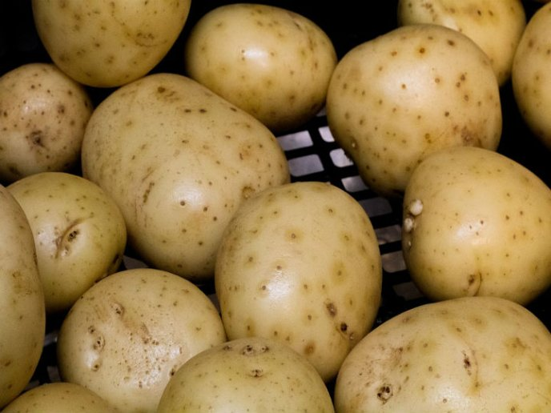

El pan, del latín panis, es un alimento básico que forma parte
de la dieta tradicional en Europa, Medio Oriente, India,
América y Oceanía.
Pan
$1000
La leche es una secreción nutritiva de color blanquecino opaco
producida por las células secretoras de las glándulas mamarias
de los mamíferos, incluidos los monotremas.
Leche
$1000
Los huevos de las aves constituyen un alimento habitual en la
alimentación de los humanos. Se presentan protegidos por una
cáscara y son ricos en proteínas y lípidos.
Huevos
$1000
La carne es el tejido animal, principalmente muscular, que se
consume como alimento.
Carne
$1000

Solanum tuberosum, de nombre común papa1 o patata, es una
especie herbácea perteneciente al género Solanum de la familia
de las solanáceas, originaria de la región que comprende el
altiplano sur del Perú3 y el noroccidente de Bolivia.
Papas
$1000
La manzana es el fruto comestible de la especie Malus
domestica, llamada comúnmente manzano. Es una fruta pomácea de
forma redonda y sabor más o menos dulce, dependiendo de la
variedad.